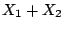
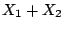

Starting from any (real or complex) signal  , we can make other signals by
time shifting the signal
, we can make other signals by
time shifting the signal  by a (positive or negative) integer
by a (positive or negative) integer  :
:
Time shifting is a linear operation (considered as a function of the input
signal  ); if you time shift a sum  you get the same result as
if you time shift them separately and add afterward.
); if you time shift a sum  you get the same result as
if you time shift them separately and add afterward.
Time shifting has the
further property that, if you time shift a sinusoid of frequency  , the
result is another sinusoid of the same frequency; time shifting never
introduces frequencies that weren't present in the signal before it was
shifted. This property, called
time invariance,
makes it easy to analyze the effects of time shifts--and linear combinations
of them--by considering separately what the operations do on individual
sinusoids.
, the
result is another sinusoid of the same frequency; time shifting never
introduces frequencies that weren't present in the signal before it was
shifted. This property, called
time invariance,
makes it easy to analyze the effects of time shifts--and linear combinations
of them--by considering separately what the operations do on individual
sinusoids.
Furthermore, the effect of a time shift on a sinusoid is simple: it just
changes the phase. If we use a complex sinusoid, the effect is even simpler.
If for instance
The phase change is equal to  , where
, where
 is
the angular frequency of the sinusoid. This is exactly what we should expect
since the sinusoid advances
is
the angular frequency of the sinusoid. This is exactly what we should expect
since the sinusoid advances  radians per sample and it is offset
(i.e., delayed) by
radians per sample and it is offset
(i.e., delayed) by  samples.
samples.